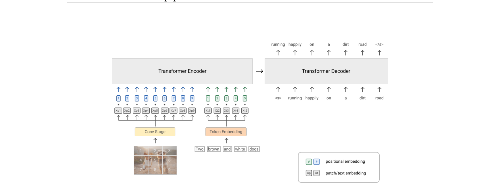
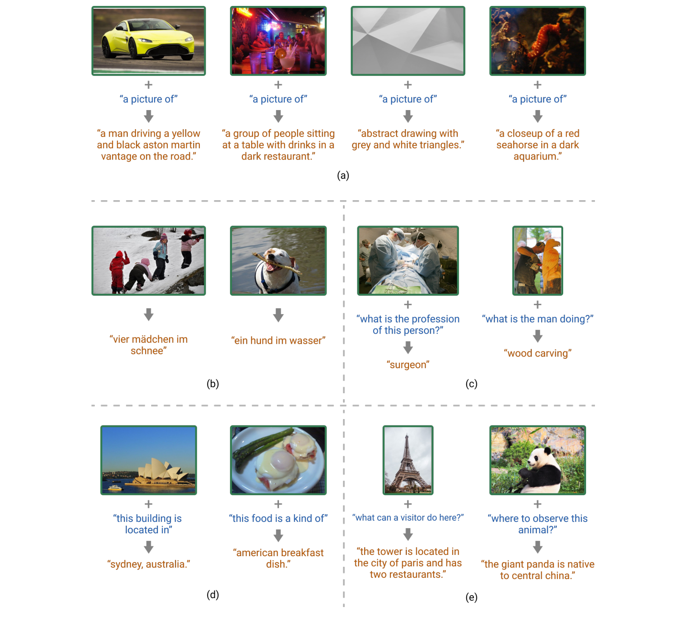

SimVLM¶
📄 论文链接：arXiv:2108.10904 | PDF
目录¶
核心要点¶
- 极简主义视觉-语言预训练：SimVLM 仅用单一的 PrefixLM 目标函数，无需目标检测器、无需多种辅助损失，就能在所有主要 VL 基准上达到 SOTA，是对当时主流复杂 VLP 范式的根本性简化。
- 弱监督数据即可胜任：使用大规模噪声 image-alt-text 数据（ALIGN ~18亿对）+ 纯文本语料（C4 ~800GB）从头预训练，无需任何干净标注数据，性能超越所有使用精标数据的方法。
- PrefixLM 目标的创新：巧妙融合 MLM 的双向理解和 LM 的生成能力——前缀部分用双向注意力（含图像），后缀部分用因果注意力（生成文本），使同一模型既能做判别式任务又能做生成式任务，且天然支持零样本推理。
- 零样本跨模态迁移：首次展示 VLP 模型可以仅在纯文本数据上微调，然后直接迁移到图像+文本任务上评估，性能接近全监督方法，证明学到了真正的统一多模态表示。
- 生成式 VLP 的全面胜利：在 VQA、Captioning、开放式问答等任务上全面超越之前基于 MLM 的方法，为后续生成式多模态大模型（如 CoCa、BLIP-2、Flamingo）的发展奠定了基础。
1. 背景与动机¶
1.1 现有 VLP 方法的四大痛点¶
在 SimVLM 之前，视觉-语言预训练（VLP）方法存在以下关键瓶颈：
- 依赖昂贵的标注数据
- LXMERT、UNITER、OSCAR、VinVL 等方法普遍需要干净的图像描述（clean captions）和区域标签（regional labels）
-
这些精标数据规模有限（如 COCO ~12万图，Visual Genome ~10万图），严重限制了模型的可扩展性
-
依赖目标检测器
- 大多数方法需要先训练一个有监督的目标检测器（如 Faster R-CNN，在 Visual Genome 上训练）
- 用检测器提取图像的 ROI（Region-of-Interest）特征作为视觉输入
-
这增加了训练流水线的复杂度和成本，且检测器本身的性能上限会限制 VLP 模型
-
预训练目标过于复杂
- 为了弥补标注数据的不足，引入了多种任务特定的辅助损失函数：
- Masked Language Modeling (MLM)
- Image-Text Matching (ITM)
- Masked Region Classification (MRC)
- Word-Region Alignment (WRA)
- 等等
-
导致优化过程复杂，各个损失之间的权重难以平衡
-
缺乏零样本能力
- 基于 MLM 的预训练-微调范式通常不具备零样本泛化能力
- 不像 GPT-3 那样可以通过 prompt 进行零样本推理
- 每个下游任务都需要专门的微调
1.2 SimVLM 的设计目标¶
针对上述问题，SimVLM 的目标是构建一个极简主义的 VLP 框架，满足三个条件：
- 能无缝接入预训练-微调范式，在标准 VL 基准上取得有竞争力的性能
- 不需要复杂的预训练协议（单一目标函数即可）
- 具备跨模态零样本泛化的潜力
2. 方法¶

Figure 1: SimVLM 模型架构与 PrefixLM 训练目标示意图2.1 模型架构：Encoder-Decoder Transformer¶
SimVLM 采用 Encoder-Decoder Transformer 架构，视觉和文本共享大部分参数。
视觉编码器¶
直接处理原始图像，不使用目标检测器：
- Conv Stage：使用 ResNet 的前三个 block 提取上下文感知的 patch 特征
- Base 模型：ResNet-101
- Large 模型：ResNet-152
- Huge 模型：更大的 ResNet-152 变体
-
实验证明这种上下文化的 patch 表示优于 ViT 中简单的线性投影
-
图像分块：将图像分割为固定大小（16×16）的 patch，展平为 1D 序列
- 预训练分辨率：224×224
-
产生 14×14 = 196 个视觉 token
-
2D 相对位置注意力：在 Transformer 层内额外加入 2D 相对位置注意力，保留图像的空间结构信息
文本处理¶
- 使用 SentencePiece 分词器将文本切分为子词 token
- 词表大小：32,000
- 编码器和解码器的最大序列长度均为 256
参数共享策略¶
- 编码器处理双向上下文（包括图像 patch 和文本前缀）
- 解码器进行自回归生成
- 除 Conv Stage 和位置嵌入外，视觉和文本输入之间共享所有参数
- 嵌入层与解码器 softmax 输出层也共享参数
为什么选择 Encoder-Decoder 而非 Decoder-only？
消融实验表明，Encoder-Decoder 架构显著优于同等规模的 Decoder-only 架构，说明将双向编码与单向解码解耦的归纳偏置对联合 VL 表示学习至关重要。
2.2 训练目标：Prefix Language Modeling（PrefixLM）¶
SimVLM 仅使用单一的预训练目标——PrefixLM，这是其"Simple"的核心体现。
PrefixLM 的定义¶
给定输入序列 x，随机选择一个前缀长度 Tp，将序列分为： - 前缀部分 x<Tp：使用双向注意力（类似 BERT） - 后缀部分 x≥Tp：使用自回归因果注意力（类似 GPT）
训练目标是最小化后缀部分的负对数似然：
L_PrefixLM = -E[Σ log P(xt | x[Tp,t], x<Tp)]，其中 t 从 Tp 到 T
对于图像-文本对的处理¶
- 将图像特征序列（长度 Ti）拼接在文本序列前面作为前缀
- 强制采样前缀长度 Tp ≥ Ti，确保 LM loss 只在文本部分计算
- 即：模型根据图像+部分文本来预测剩余文本
- 这样图像自然地充当了文本描述的"前缀"，符合网页中图片通常出现在文字之前的规律
对于纯文本语料¶
- PrefixLM 是模态无关的，可以直接去掉图像 patch，仅使用文本 token 进行训练
- 这使得模型可以在同一个目标下统一训练图像-文本数据和纯文本数据
PrefixLM 的优势¶
| 对比目标 | PrefixLM 的优势 |
|---|---|
| MLM (BERT) | 多了生成能力（可以进行文本生成和零样本推理） |
| 纯 LM (GPT) | 多了双向上下文理解能力（前缀部分是双向注意力的） |
| Span Corruption (T5) | 消融实验证实 PrefixLM 效果更好 |
2.3 训练数据：大规模弱监督¶
SimVLM 使用大规模弱监督数据从头预训练，无需任何人工精标数据：
| 数据类型 | 来源 | 规模 | 说明 |
|---|---|---|---|
| 图像-文本对 | ALIGN 训练集 | ~18 亿对 | 从网络爬取的噪声 image-alt-text 对，仅做简单的随机裁剪，无额外过滤 |
| 纯文本 | C4 (Colossal Clean Crawled Corpus) | ~800GB | 用于补偿 alt-text 中的噪声文本监督 |
训练配置： - 每个 batch 包含 4,096 个图像-文本对 + 512 个纯文本文档，两种数据在每个 batch 内混合 - 使用 512 个 TPU v3 芯片训练约 100 万步 - 优化器：AdamW（β1=0.9, β2=0.999, weight decay=0.01） - 学习率：预热 2% 后线性衰减至峰值 5×10⁻⁴ - 预训练阶段不使用 Dropout
2.4 与之前方法的关键区别¶
| 对比维度 | 传统 VLP (LXMERT/UNITER/OSCAR/VinVL) | CLIP/ALIGN | SimVLM |
|---|---|---|---|
| 图像输入 | ROI 特征（需 Faster R-CNN） | 原始图像 | 原始图像（Conv+Transformer） |
| 预训练目标 | MLM + ITM + MRC + 多种辅助损失 | 对比学习（contrastive） | 单一 PrefixLM |
| 数据要求 | 干净标注（COCO/VG等） | 大规模噪声数据 | 大规模噪声数据 + 纯文本 |
| 生成能力 | 无（仅判别式） | 无（仅检索/分类） | 有（自回归生成） |
| 零样本能力 | 无 | 有限（仅分类/检索） | 强（captioning、open-ended VQA、跨模态迁移） |
| 预训练复杂度 | 高（多阶段、多损失） | 中 | 低（端到端、单损失） |
| 微调范式 | 预训练-微调 | 通常不微调 | 预训练-微调 + 零样本 |
核心区别：SimVLM 是第一个仅用单一语言建模目标 + 弱监督数据就能在判别式和生成式 VL 基准上全面超越之前所有方法的模型，同时具备零样本能力。
3. 实验¶
3.1 标准 VL 基准（预训练-微调）¶
SimVLM 在 6 个 VL 基准上全部达到 SOTA，且无需额外数据或任务特定定制：
| 任务 | 指标 | 之前 SOTA | SimVLMhuge | 提升 |
|---|---|---|---|---|
| VQA v2 | vqa-score | 76.56 (VinVL) | 80.34 | +3.74% |
| NLVR2 | accuracy | 84.84 (VinVL) | 85.15 | +1.17% |
| SNLI-VE | accuracy | 85.62 (VinVL) | 86.32 | +1.37% |
| CoCo Caption | CIDEr | 134.8 (SOHO) | 143.3 | +10.1% |
| NoCaps | CIDEr | 110.3 (SOHO) | 115.2 | — |
| Multi30k En-De | BLEU@4 | — | 25.4 | — |
值得注意的是，即使是 SimVLMbase（较小模型）也已超越之前所有方法。
3.2 零样本/少样本图像描述¶
- 零样本：直接在 CoCo/NoCaps 上解码，使用 prompt "A picture of" 提升质量
- SimVLMhuge 在 CoCo 上达到 CIDEr 32.2，接近全监督基线
- 少样本（1% 数据）：SimVLMhuge 在 CoCo 上达到 CIDEr 131.3，接近全监督 SOTA
- 在概念丰富的 NoCaps 基准上表现尤为突出，展示了强大的域外泛化能力
3.3 零样本跨模态迁移（全新实验范式）¶
这是一个全新的实验范式，验证模型是否学到了真正的统一多模态表示：
实验设计： - 仅在纯文本 NLI 数据（SNLI/MNLI）上微调 - 然后直接在图像+文本的 SNLI-VE 测试集上评估
结果： - SimVLMhuge 达到 74.24% 准确率 - 接近全监督 UNITER（78.59%） - 在 Multi30k 英德翻译任务上，仅在纯文本翻译数据上微调，直接用图像输入解码德语描述，达到 BLEU@4 = 18.2
意义：验证了模型学到了真正的统一多模态表示，对降低多模态模型的标注成本具有重要意义。
3.4 开放式 VQA¶
将 VQA 重新定义为生成任务（而非 3129 类分类）：
- SimVLM 在域外问题上比判别式方法高出 17+ 分
- 能生成不在候选集中的合理答案（如 "surgeon"、"wood carving"）
- 在 WIT（Wikipedia-based Image Text）数据集上继续预训练 50k 步后，零样本开放式 VQA 能力涌现

Figure 2: SimVLM 在各种应用中的生成示例：(a) 零样本图像描述 (b) 少样本图像描述 (c) 开放式 VQA (d) 零样本跨模态迁移3.5 单模态任务¶
- GLUE 基准：SimVLMbase 在纯文本 NLU 任务上优于所有之前的 VLP 模型，接近 BERT
- ImageNet 线性评估：SimVLMhuge 达到 83.6% top-1 准确率，虽不及 CLIP（85.5%），但考虑到未使用对比损失，已属优秀
3.6 消融实验关键发现¶
| 实验设置 | 结果 | 结论 |
|---|---|---|
| Encoder-Decoder vs Decoder-only | Encoder-Decoder 显著更优 | 双向编码与单向解码解耦很重要 |
| PrefixLM vs Span Corruption vs 朴素 LM | PrefixLM > Span Corruption > 朴素 LM | PrefixLM 是最优目标 |
| 图文+纯文本 vs 仅图文 | 混合数据更优 | 纯文本补偿了噪声文本监督 |
| 3个 vs 2个 vs 4个 ResNet Block | 3个最优 | Conv Stage 的深度需要平衡 |
| 10% ALIGN vs 100% ALIGN | 100% 显著更优 | 数据规模至关重要 |
| CC-3M vs ALIGN | ALIGN 显著更优 | 数据规模 > 数据质量（在一定噪声范围内） |
4. 总结¶
4.1 核心贡献¶
- 极简主义预训练框架
- 提出仅用单一 PrefixLM 目标即可完成高质量 VLP
- 摒弃了目标检测器、多种辅助损失和复杂的多阶段预训练流程
-
这是对当时主流 VLP 范式的根本性简化
-
弱监督即可胜任
- 证明了大规模噪声 image-alt-text 数据 + 纯文本语料足以训练出超越所有使用精标数据方法的模型
-
打破了"VLP 必须依赖干净标注"的认知
-
PrefixLM 目标的创新
- 巧妙地融合了 MLM 的双向理解和 LM 的生成能力
- 使同一模型既能做判别式任务又能做生成式任务
-
天然支持零样本推理
-
零样本跨模态迁移
- 首次展示了 VLP 模型可以仅在纯文本数据上微调，然后直接迁移到图像+文本任务上评估
- 证明了统一多模态表示的有效性
-
对降低多模态模型的标注成本具有重要意义
-
生成式 VLP 的全面胜利
- 首次在广泛的 VL 基准上证明生成式预训练不仅不逊于 MLM 方法，而且在性能和零样本能力上都显著优于后者
-
为后续生成式多模态大模型（如 Flamingo、BLIP-2 等）的发展奠定了基础
-
端到端原始图像处理
- 直接使用 Conv+Transformer 处理原始图像 patch，无需外部目标检测器
- 使整个流水线真正端到端可训练，大幅提升了可扩展性
4.2 局限性与讨论¶
- ImageNet 性能：虽然达到了 83.6%，但仍不及 CLIP（85.5%），说明对比学习在某些判别式任务上仍有优势
- 计算资源：需要 512 个 TPU v3 训练 100 万步，计算成本较高
- 数据依赖：虽然使用了弱监督数据，但仍需要大规模数据（18亿图文对），小规模数据效果会下降
4.3 对后续工作的影响¶
SimVLM 的成功证明了生成式预训练在多模态领域的巨大潜力，直接影响了后续一系列重要工作：
- CoCa（SimVLM 作者后续工作）：在 SimVLM 基础上引入对比学习，结合 Contrastive + Captioning
- BLIP-2：采用类似的生成式预训练，但使用 Q-Former 作为视觉-语言连接器
- Flamingo：进一步扩展了生成式多模态模型的能力
- PaLI：探索了多任务预训练与生成式目标的结合
SimVLM 标志着 VLP 从"复杂的多任务判别式预训练"向"简单的生成式预训练"的范式转变。